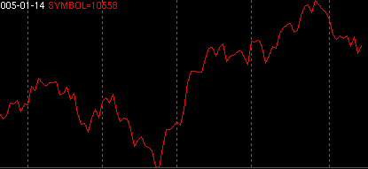

Symbol - SYMBOL

Parameters:
- Color - Plot color
- Line Type - The type of plot to draw
- Label - The text that identifies the plot
- Symbol - The symbol (ticker) to use
Description:
Plots the close of a qtstalker symbol (ticker). This has many uses:
1) If you want to compare a particular symbol side by side with another
you can place the symbol in it's own tabbed indicator along side of the
main plot.
2) You can also apply this onto the main chart and overlay it where the
symbol will rescale itself to the current main plot.
alt="Back" border="0" height="32" width="32">
border="0" height="32" width="32">